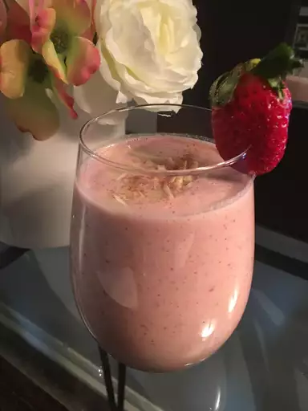

Strawberry Banana Protein Shake

Description
This strawberry banana protein shake is a healthy, versatile drink,
perfect for a post-workout meal. It also makes a healthy alternative to an
ice cream shake for the kids. The banana and strawberries can be
substituted with kiwi, pineapple, pears, mango, blueberries, etc. Get
creative and enjoy!
Ingredients
- 1 cup skim milk
- 1 scoop vanilla-flavored whey protein powder
- 2 cups ice
- 1 cup strawberries
- 1 large banana
- 1 tablespoon natural peanut butter
Directions
Layer milk, protein powder, ice, strawberries, banana, and peanut butter
in a blender in this order; blend until creamy and smooth.